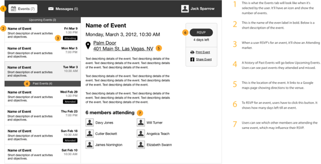

Annotate Wireframes
Why?
Wireframe annotations are important because they give clients, stakeholder, developers or PMs clear explanations to your design decisions.

Tips
Short and to the point
Giant blocks of text aren’t attractive to read. Keep your explanations short and to the point. You could end up with a lot of annotations

Focus on user benefits
Your annotations should focus on explaining how each design element helps the client’s users

Use numerical circles and order them
Numerate your annotations in circles and place them in order from left-to-right going down the page

Explanations in a column on the right
Keep annotations to the right, it makes it legible as the user scans it.
Mobile First
Mobile-First- Forces You to Focus on Core Content and Functionality... There are some complications that come from building a wireframe for a desktop, then fitting those block designs for our mobile users (eg. tables on mobile v. on desktop) This should have been slide 1
blah blah blah
Now show us some pictures

Example 1

Example 2

Example 3

Example 4

Resources
- Patterns: ui-patterns.com
- Patterns: patterntap.com
- Kits & Stencils: smashingmagazine.com
- Blog: wireframewednesday
- Blog: boxesandarrows
Thanks